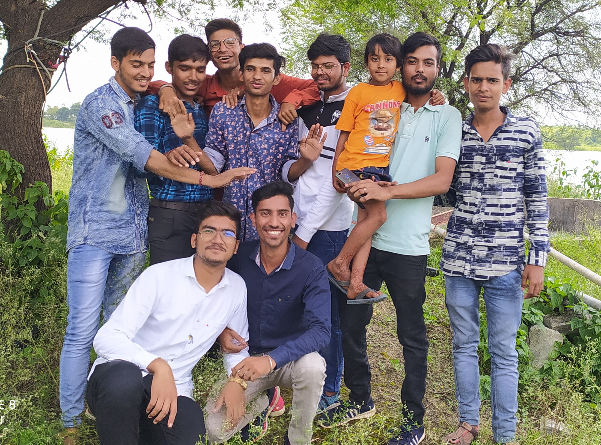
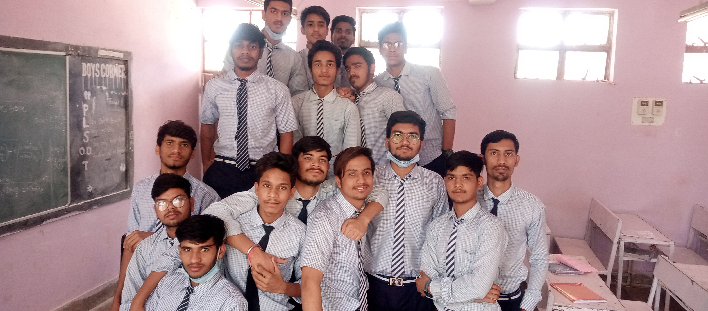
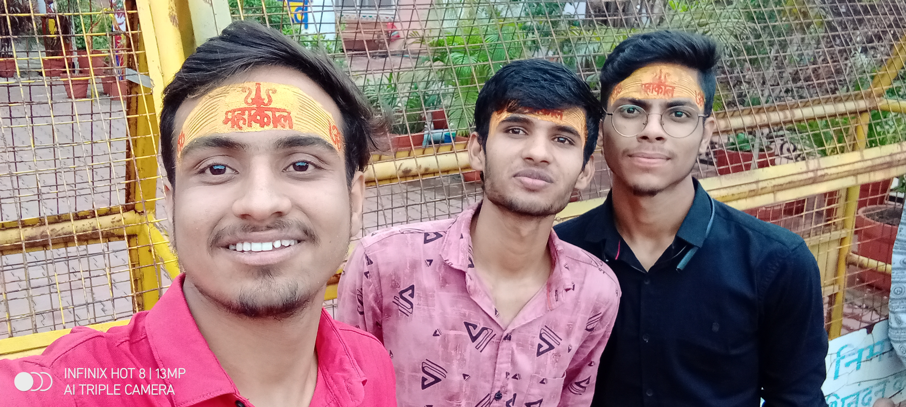
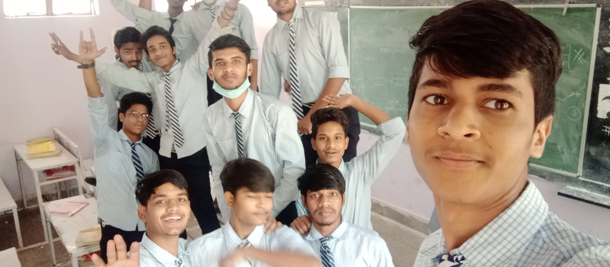
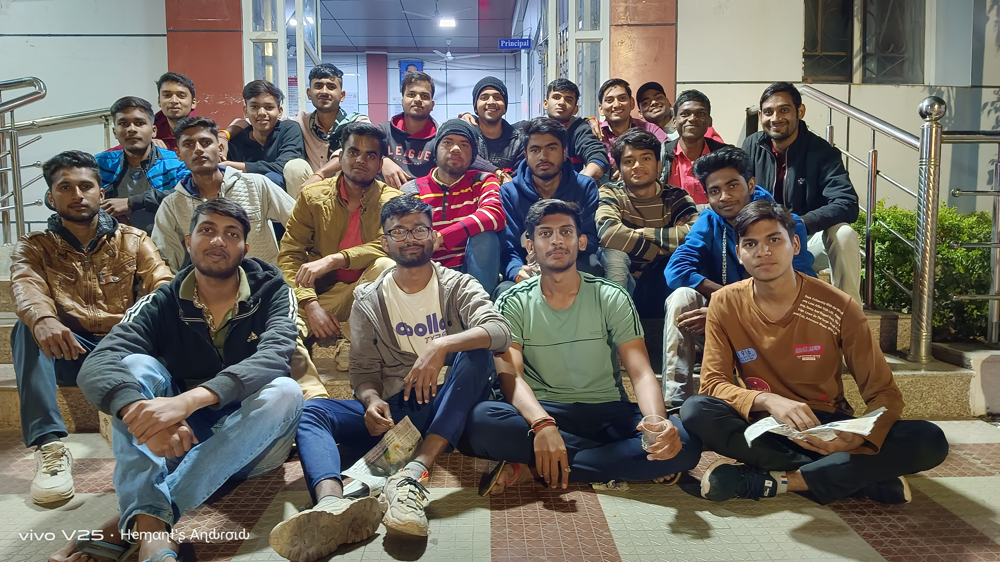
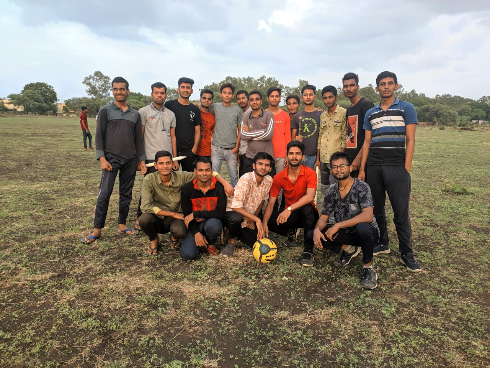
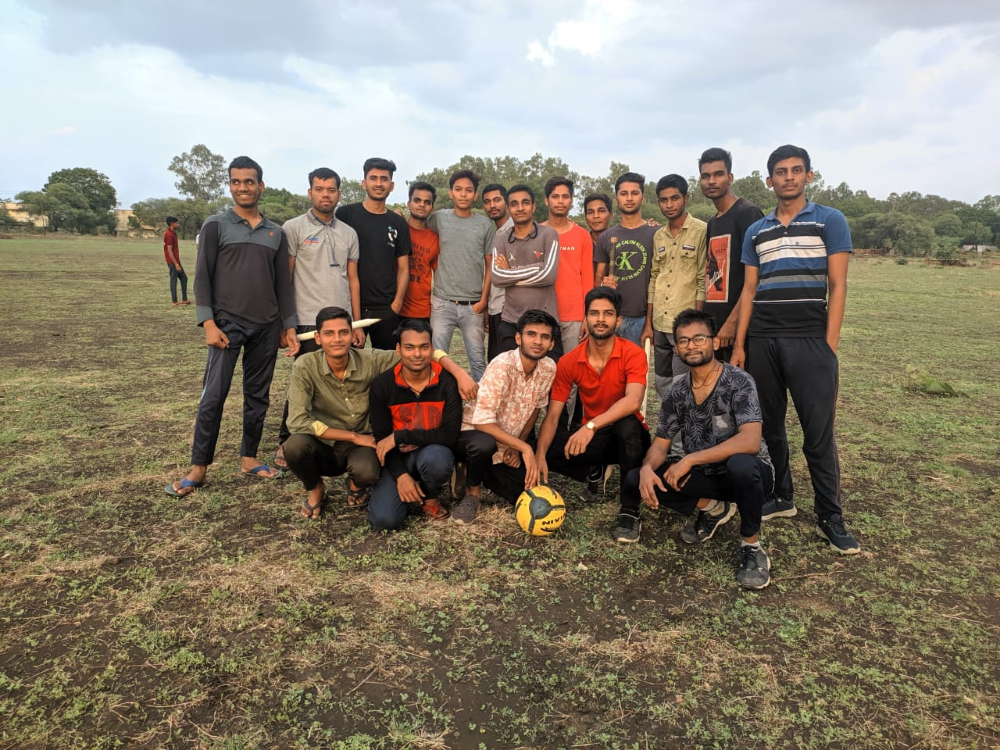

MY EDUCATION
I am deviding my education part in the three phases;- Nursary to 5th class...
- class 6th to class 12th...
- B.tech 1st semester to current time(3rd semester)...
Nursary to 5th class...
I had completed my nursary to 5th class from 'Sadhana Vidya Mandir kalaliya' which is a hindi medium school of my village.According to my capabilities in all the aspects like finential,social and all the other stuffs, it was a great source of education for me at that time but as people says "If someone gets something easily, then he does not appreciate it." I was also don't care of schools and studies and run for the fun and play with friends all the time.But a moment appeared after class 4th when one day my father beat me for getting more naughty. Then after I was sitted for study due to the afraid of my father,and that's results in the good thing.I got selected for the 'Jawahar Navodaya Vidyalaya Ratlam' which is a well known and a reputed school govern by the central ministry of India.
class 6th to class 12th...
Frenqly speaking it was a turning point of my life.When I was selected for JNV after
cracking JNV entrance test 2014, I was literally very happy, then I went to school
and seriusly it was very new to me that their totally a different culture was followed
and a lot of things we had to learn like we have sports teachers which are allrounder and
well specialists in many of the games,we had music teachers with having unbelievable talent
in them,we had great teachers of art and drawing and many more things and great facilities provided by the schools
in all these things.
Apart from all these things there were a beautiful mess
with beautiful food and provided amazing dishes on the daily basis.If I talk about the
people, all the people were from different different places and I didn't knew anybody.
Then time spends,we get to know each other And now this is the time that we all
the navodayan friends miss each other and wants to meet each other.
It was a seven year of golden time for my life and I can't forget them any how and also
I can't even say in my words how much navodaya does in my life.I have attached some
of my memorable clips.


B.tech 1st semester to current time(3rd semester completed)...
My college life started from 9 November 2021.When I came to the collage their were induction
starting from the next day.It were amazing time and we enjoyed a lot things at that time
like creations,seminars,yoga,dancing and playing.In the last day of induction,the
sports competetion were happened and in that event we won the volleyball finals.
And then from next day our classes of 1st sem started.But after some time in
the starting of january the covid come back and we went to the home then our exams were
held online.Then we came back in 2nd sem for offline classes,when we came back to the
college,it was totallly a new scenerio because at that time many events were happened.
We enjoyed a lot in these events.After all these fun our 2nd sem finished.
Then it comes to starting of 3rd of and we also didn't know how fast
our 3rd sem gone.It was only of approximately less than four months.
It was like it started, then assignments given to us then MSTs happened than
internals after than final exams and then externals happened and semester finished.
The most worth less thing was that in the last one and half year I didn't do any
productive thing.
I have attached some of my college memorable clips below.

 
